Hotelling ellipses, contours and outliers
gghotelling.RmdHotelling’s T² Ellipses and Outlier Detection for ggplot2

Hotelling data ellipses use the Hotelling T² distribution to create coverage regions for the distribution of the data, often used in outlier detection in multivariate data.
Features:
- Classical Hotelling and data ellipses with
geom_hotelling() - Robust Hotelling ellipses using MCD estimator with
robust=TRUE - Hotelling confidence ellipses for group means with
type="t2mean" - Kernel density coverage contours with
geom_kde() - Outlier detection with
outliers() - Outlier visualization with
stat_outliers()andplot_outliers() - Convex hulls with
geom_hull() - Autoplot and autolayer methods for
prcompobjects
Hotelling Ellipses
The geom_hotelling() function
The package defines a new geom, geom_hotelling(), which
can be used to add Hotelling ellipses to ggplot2 scatter plots.
library(ggplot2)
library(gghotelling)
pca <- prcomp(iris[, 1:4], scale.=TRUE)
pca_df <- cbind(iris, pca$x)
ggplot(pca_df, aes(PC1, PC2)) +
geom_hotelling(level=.99) +
geom_point()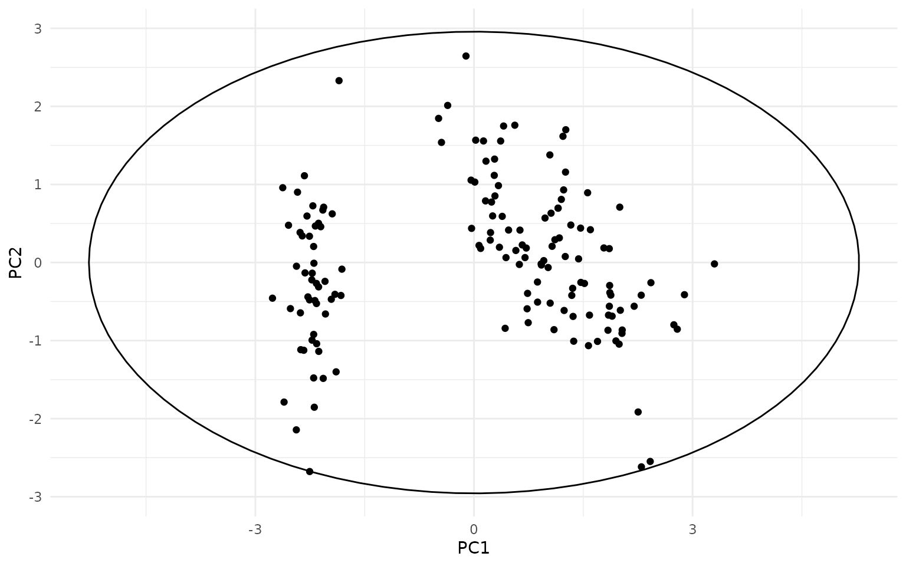
ggplot(pca_df, aes(PC1, PC2, color=Species)) +
geom_hotelling() +
geom_point()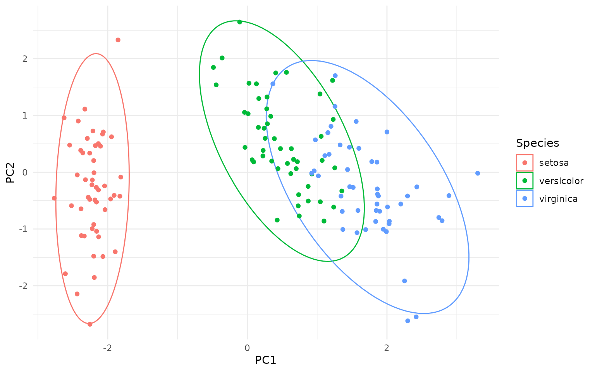
ggplot(pca_df, aes(PC1, PC2, color=Species)) +
geom_hotelling(alpha=0.1, aes(fill = Species)) +
geom_point()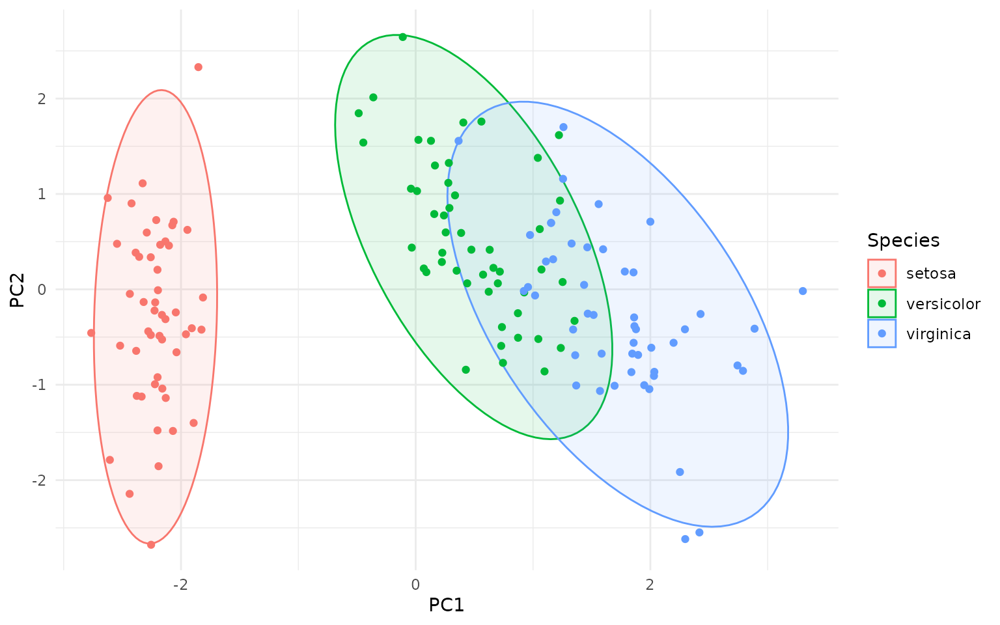
# set custom CI/coverage level
ggplot(pca_df, aes(PC1, PC2, color=Species)) +
geom_hotelling(alpha=0.1, aes(fill = Species), level=.99) +
geom_point()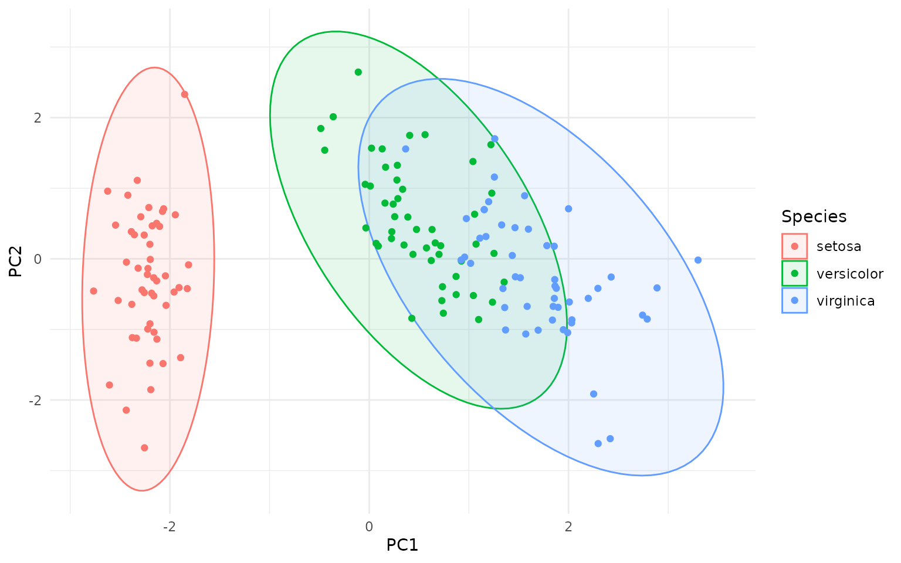
Types of Ellipses
OK, but how are the Hotelling ellipses different, say, from the
ellipses created by stat_ellipse() in ggplot2, or the
ellipse::ellipse() function?
Actually, the geom_hotelling() function can create three
different types of ellipses:
- Hotelling T² data ellipses (default,
type="t2data"): these ellipses represent the spread of the data points themselves, based on the Hotelling T² distribution. They can be used to visualize the overall distribution of the data and identify potential outliers. - Hotelling T² confidence ellipses for group means
(
type="t2mean"): these ellipses represent the confidence region for the mean of each group, based on the Hotelling T² distribution. They can be used to compare the means of different groups and assess whether they are significantly different from each other. - Chi-squared data ellipses (
type="c2data"): these ellipses are based on the chi-squared distribution and also represent the spread of the data points. They are similar to the ellipses created bystat_ellipse()in ggplot2 and theellipse::ellipse()function.
All three ellipses above use Mahalanobis distance contours, but differ in the statistical choice of distribution (Hotelling T² vs χ²) in order to select the Mahalanobis distance threshold for drawing the ellipse.
So why the different distributions? The point is whether we are considering the data to be the actual population (in which case we use the χ² distribution) or a sample from a larger population (in which case we use the Hotelling T² distribution). The Hotelling T² distribution takes into account the uncertainty in estimating the population parameters (mean and covariance) from a finite sample, leading to wider ellipses compared to the χ² distribution, as you can see on the figure below - the dashed ellipses are the χ² data ellipses:
ggplot(pca_df, aes(PC1, PC2, color = Species)) +
geom_hotelling(level=.99) +
geom_hotelling(level=.99, type="c2data", linetype = "dashed") +
geom_point()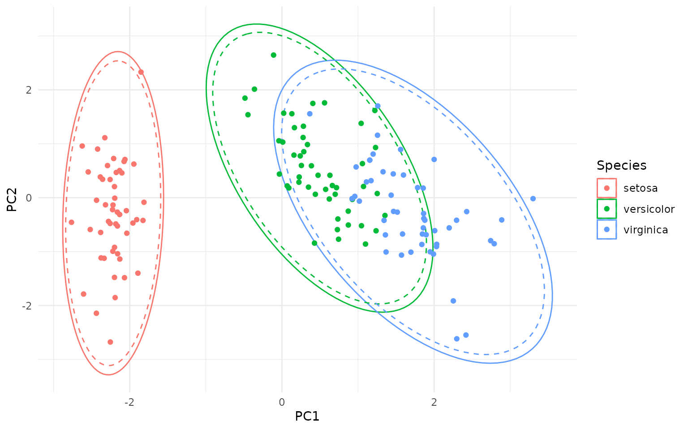
In addition to the classical Hotelling ellipses, robust versions can
be created with the robust=TRUE argument, which uses the
Minimum Covariance Determinant (MCD) estimator to compute robust
estimates of the mean and covariance matrix (see below for details).
Outlier Detection
The package also provides per-point, group-wise T² statistics which can be used to identify multivariate outliers.
ggplot(pca_df, aes(PC1, PC2, group=Species)) +
geom_hotelling(level = 0.75, alpha=0.1, aes(fill = Species)) +
# add points and calculate outlier stats; we assign the `is_outlier` variable
# calculated by stat_outliers() to the color aesthetic
stat_outliers(level = .75,
aes(shape = Species, color = after_stat(is_outlier))) +
# color outliers in red
scale_color_manual(values=c("TRUE"="red", "FALSE"="grey"))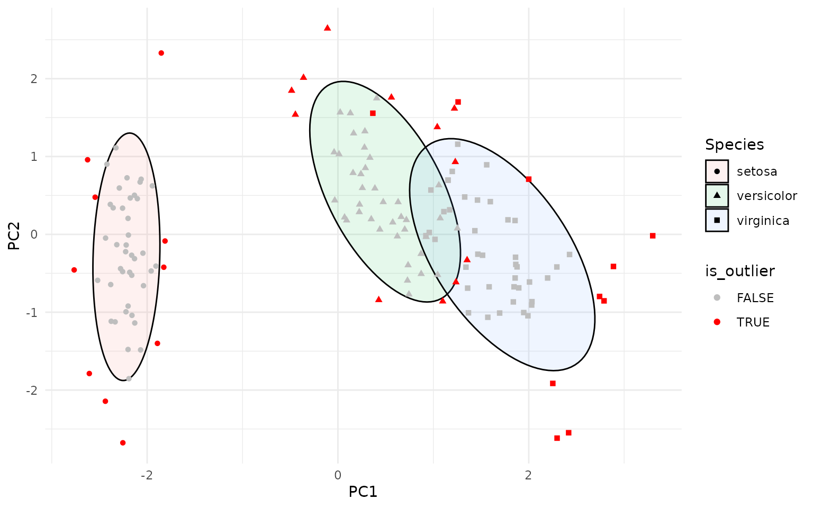
The stat_outliers() function computes the Hotelling T²
statistic for each point and compares it to the critical value from the
Hotelling T² distribution at the specified confidence level (default is
0.95). The new data is available to aesthetics via
after_stat(), including:
-
t2: the Hotelling T² statistic for each point -
c2: the χ² statistic for each point -
is_outlier: a logical indicating whether the point is an outlier
These variables can be used, through stat_outliers(), to
map aesthetics such as color, shape, or
size to highlight outliers. For example:
ggplot(pca_df, aes(PC1, PC2, group=Species)) +
geom_hotelling(alpha=0.1, aes(fill = Species)) +
stat_outliers(size=2, aes(shape = Species, color = after_stat(t2)))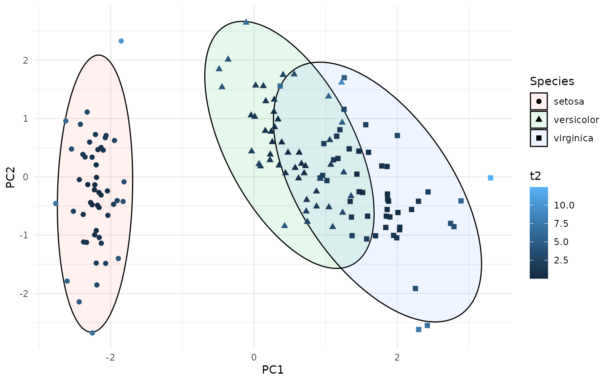
This can be useful for identifying potential outliers in multivariate data. The outliers can be directly labeled as follows:
ggplot(pca_df, aes(PC1, PC2, group=Species, label=rownames(pca_df))) +
geom_hotelling(alpha=0.1, aes(fill = Species)) +
geom_point(aes(color = Species)) +
stat_outliers(geom="label",
outlier_only = TRUE)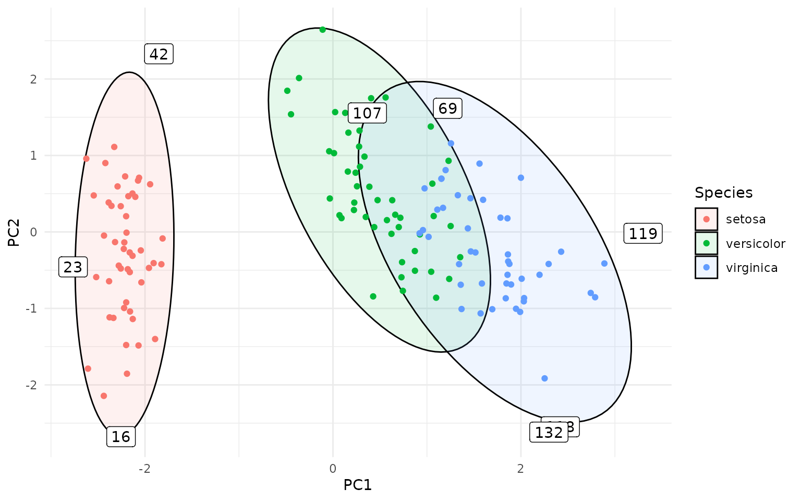
Or even better, using ggrepel to avoid overlapping
labels:
library(ggrepel)
ggplot(pca_df, aes(PC1, PC2, group=Species, label=rownames(pca_df))) +
geom_hotelling(alpha=0.1, aes(fill = Species)) +
geom_point(aes(color = Species)) +
stat_outliers(geom="label_repel",
outlier_only = TRUE)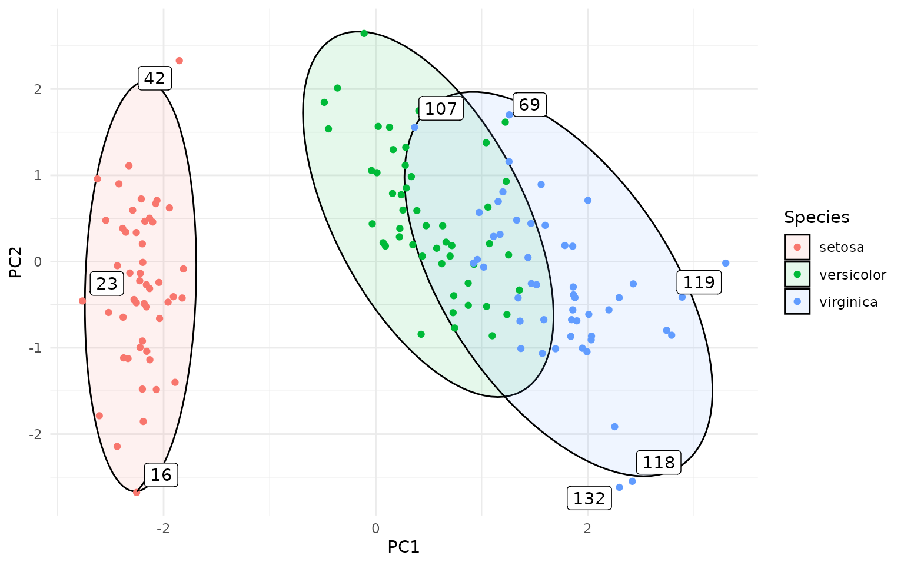
The actual calculation of the Hotelling T² statistics and critical
values is done in the function outliers(), which can also
be used directly on data frames to compute the statistics without
plotting:
outlier_stats <- outliers(pca_df[ , c("PC1", "PC2")], level = 0.95)
head(outlier_stats)
#> d2 t2crit c2crit is_outlier
#> 1 1.996071 6.155707 5.991465 FALSE
#> 2 1.967770 6.155707 5.991465 FALSE
#> 3 2.029500 6.155707 5.991465 FALSE
#> 4 2.187372 6.155707 5.991465 FALSE
#> 5 2.398597 6.155707 5.991465 FALSE
#> 6 3.876401 6.155707 5.991465 FALSEWe can visualize it with the typical ggplot2 syntax:
outlier_stats$id <- 1:nrow(outlier_stats)
outlier_labels <- ifelse(outlier_stats$is_outlier,
as.character(outlier_stats$id), NA)
ggplot(outlier_stats, aes(x = id, y = sqrt(d2))) +
geom_segment(aes(xend = id, yend = 0), alpha = .3) +
geom_point(aes(color = is_outlier), size = 2) +
scale_color_manual(values=c("TRUE"="red", "FALSE"="black")) +
geom_label(aes(label = outlier_labels), nudge_y = 0.2, na.rm = TRUE) +
geom_hline(aes(yintercept = sqrt(t2crit)), color = "red", linetype = "dashed") +
annotate("text", x = 1, y = sqrt(outlier_stats$t2crit[1]) + 0.1,
label = "Critical value", color = "red", hjust = 0) +
theme(legend.position = "none") +
labs(y = "Mahalanobis distance (T² statistic)")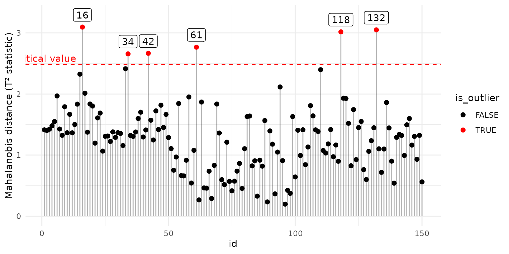
For convenience, there is a plot_outliers() function
that creates the above plot directly from a data frame:
plot_outliers(pca_df[ , c("PC1", "PC2")], level = 0.95)Robust Hotelling Ellipses
Robust Hotelling ellipses can be created by setting the
robust=TRUE argument in geom_hotelling() or
stat_outliers(). This uses the Minimum Covariance
Determinant (MCD) estimator from the robustbase package to
compute robust estimates of the mean and covariance matrix, which are
then used to compute the Hotelling or chi-squared data ellipses.
Robust ellipses are less sensitive to outliers and can provide a more
accurate representation of the data distribution when outliers are
present. Below I am showing a comparison between classical and robust
Hotelling ellipses in the presence of outliers. The data set used,
wine, contains chemical analysis of various wines, with
several obvious outliers, and the figure recapitulates the figure 1 from
a paper by Hubert, Debruyne, and Rousseeuw (2018).
library(HDclassif)
data(wine)
wine <- wine[ wine$class == 1, ]
wine <- data.frame("malic_acid"=wine$V2, "proline"=wine$V13)
ggplot(wine, aes(malic_acid, proline)) +
geom_hotelling(type="c2data", level = .975, color = "red") +
geom_hotelling(type="c2data", level = .975, robust = TRUE, color = "blue") +
geom_point() +
annotate("text", x=2.5, y = 1675, label = "MCD", color = "blue") +
annotate("text", x=3.5, y = 1400, label = "Classical", color = "red")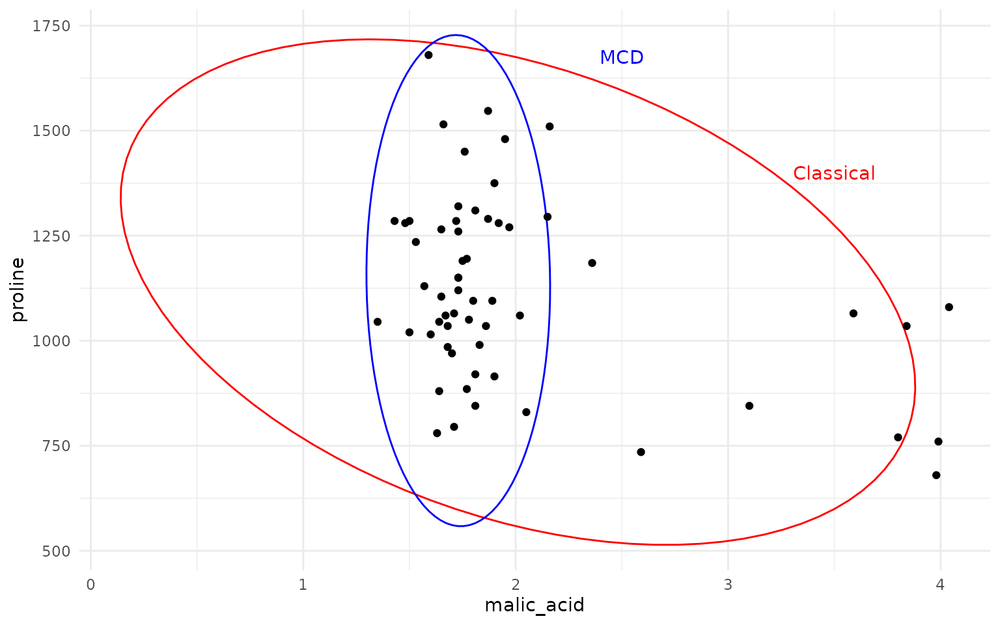
As one can see, the MCD based robust Hotelling ellipse (in blue) provides a much tighter fit to the main data cluster, while the classical Hotelling ellipse (in red) is heavily influenced by the outliers, resulting in a much larger and skewed ellipse.
Convex Hulls and contours
The package provides basic convex hull:
ggplot(iris, aes(Sepal.Length, Sepal.Width, color=Species)) +
geom_hull(mapping = aes(fill = Species), alpha=.1) +
geom_point()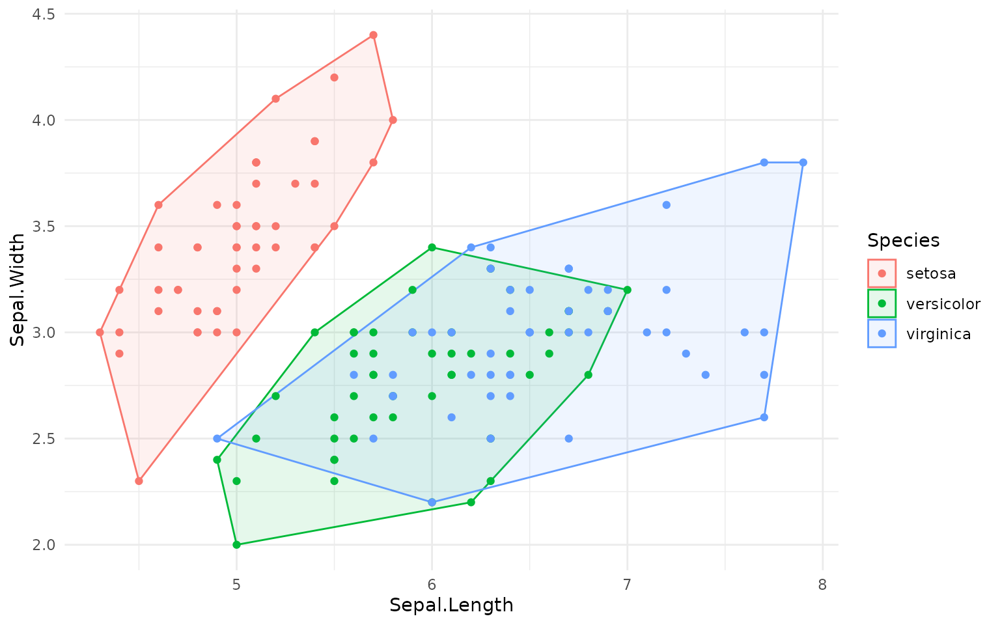
Furthermore, we also have geom_kde() to draw 2D kernel
density estimate. Unlike geom_density_2d(), this function
actually creates a single contour for the specified coverage; for
example, if coverage=0.95, the contour encloses roughly 95%
of the data points. This is useful for visualizing the density
distribution of non-elliptical data:
df <- data.frame(x=rnorm(500) + 5)
df$y <- df$x^5 + rnorm(500)*500
ggplot(df, aes(x=x, y=y)) +
geom_point()+
geom_hull(color = "grey") +
geom_kde(color="red", linewidth=1)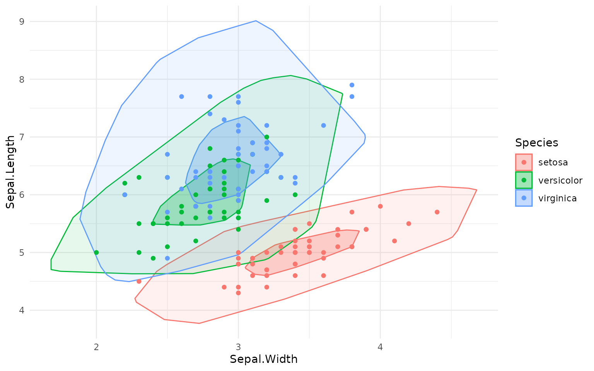
As you can see, the geom_kde() contour nicely captures
the non-elliptical distribution of the data, while the convex hull
includes a large empty area.
Of course, you can also use aesthetics like fill with
geom_kde() and overlay several contours:
# interesting little fact: ggplot2 happily accepts lists of geoms/layers
# and adds them one by one to the plot
rings <- lapply(seq(.05, .95, length.out = 10), \(i) {
geom_kde(aes(fill = Species), alpha =.05, coverage = i)
})
ggplot(pca_df, aes(x = PC1, y = PC2, color=Species)) +
rings +
geom_point()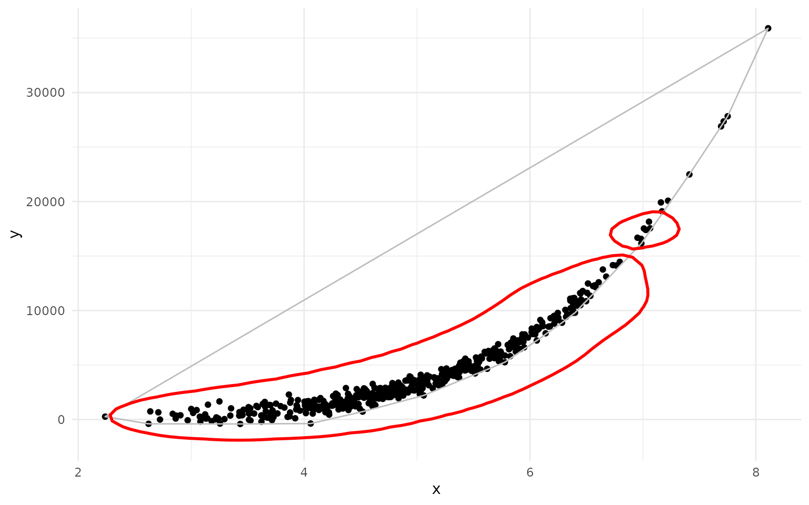
Autoplot
The package also defines autoplot.prcomp and
autolayer.prcomp for convenient plotting of PCA plots. Note
that autoplot.prcomp is also implemented in a more
sophisticated way in the ggfortify package.
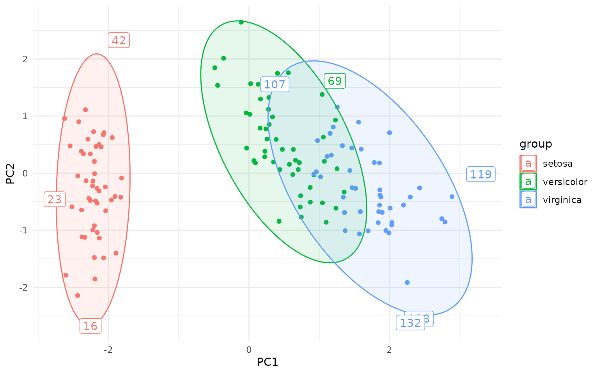
Other packages of interest
Many other packages provide functionality for creating data ellipses
and outlier detection in multivariate data, including
ellipse, car, ggfortify, and
ggplot2 itself. Why, then, create yet another package?
The Hotelling ellipses returned by geom_hotelling() are
different from the ellipses returned by the
ellipse::ellipse() or car::dataEllipse()
functions, which produce data ellipses based on a Mahalanobis distance
contour and χ² distribution quantiles (actually, without getting into
details, dataEllipse() is more sophisticated, but as far as
I understand it does not produce Hotelling ellipses). Both Mahalanobis
distance ellipses and Hotelling T² ellipses represent the shape and
spread of the data distribution, and both are actually based on the same
covariance matrix and mean vector of the data, however they use
different statistical distributions to define the contour levels
(Hotelling T² or χ², respectively), leading to different scaling of the
ellipses.
The geom_hotelling() is also different from the
stat_ellipse() which can also be used to create data
ellipses in ggplot2; similarly to ellipse::ellipse() and
car::dataEllipse(), stat_ellipse() uses
Mahalanobis distance contours based on the χ² distribution
quantiles.
In contrast, gghotelling provides explicit Hotelling T² data ellipses
and Hotelling T² confidence ellipses, with a clear distinction between
the two, as well as the data ellipses based on χ² distribution. Unlike
stat_ellipse(), it can also take the fill aesthetic for a
visually pleasing representation of the ellipses.
In addition gghotelling provides robust versions of the
ellipses using the MCD estimator, which is not available in the other
packages.
A lot of functionality overlaps with
ggfortify::ggbiplot() (and by extension
autoplot.pca_class), but this function is less flexible
than a separate geom that you can add to the figure.
My main motivation for creating this package was sorting out the
different ellipse types and allowing the use of fill
aesthetics for Hotelling ellipses. I tried to make the usage convenient,
simple and intuitive.